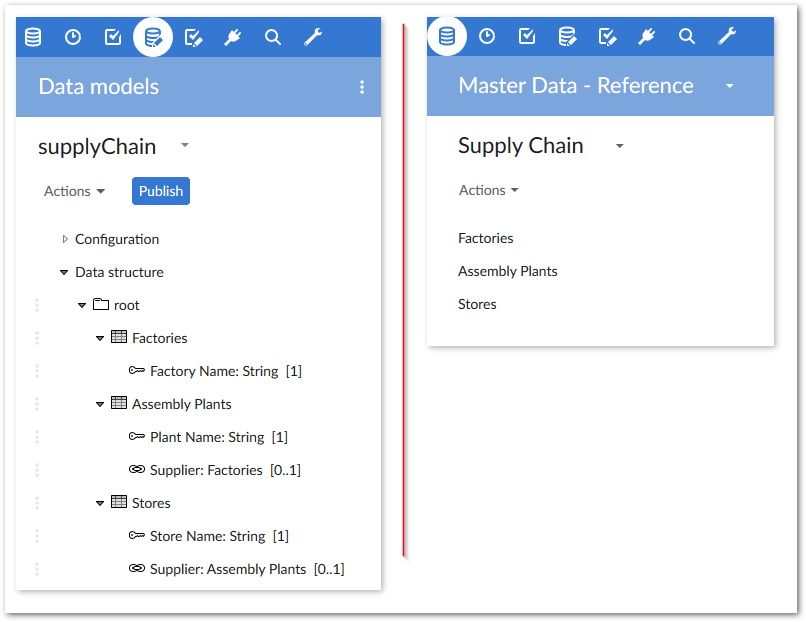

To follow this tutorial you should know how to use a text editor, be familiar with the EBX® Data Modeler Assistant (DMA), and know how to import data into EBX® tables. You can refer to the EBX® Documentation for additional information.
To setup your environment:
Copy the data model code from the Data model section in the appendix to a file and save as XSD format.
The Table data section in the appendix contains the table data required for the tutorial. Copy the data for each table to separate files and save them in XML format using the supplied table name.
In EBX®, create a new semantic data model and name it supplyChain.
From the data model's Actions menu, select Import XSD and follow the wizard to import the data model file you created in step 1.
Publish the data model and create a dataset called Supply Chain.
Open the dataset and use each table's Actions menu to import the data from the corresponding XML files created in step 2. You can use the Data Exchange Add-on, or the EBX® import XML option.
Your data model and dataset should resemble the following:

After finishing the setup, continue following the tutorial in the Viewing the data model structure section.